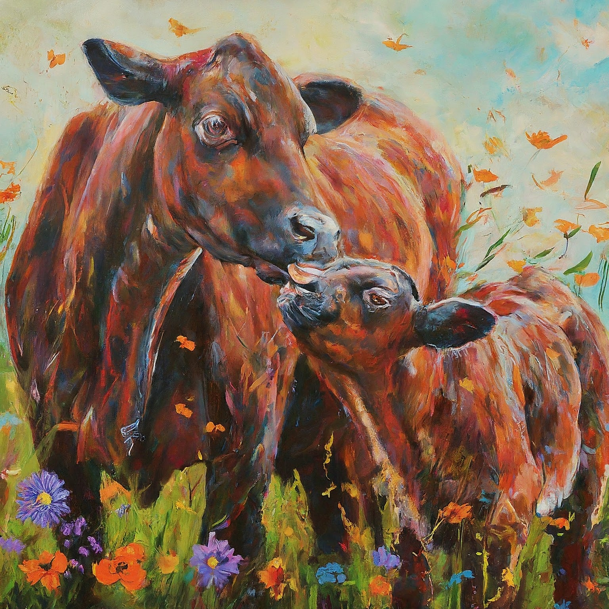

Why I Created this Page?
Since going vegan in 2021, I've realized that there is a lot to (un/re)learn. I aim to provide a comprehensive resource that I wish had existed when I was a new vegan navigating the shift.

she make milk because she's a mother"
(image generated by AI)
What is Veganism?
"The word veganism shall mean the doctrine that man should live without exploiting animals.”
- Leslie Cross (1951)
>>
"Veganism is a philosophy and way of living which seeks to exclude—as far as is possible and practicable—all forms of exploitation of, and cruelty to, animals for food, clothing or any other purpose; and by extension, promotes the development and use of animal-free alternatives for the benefit of animals, humans and the environment. In dietary terms it denotes the practice of dispensing with all products derived wholly or partly from animals."
- The Vegan Society
>>
In a nutshell, by going vegan, we stop viewing all animals as resources who can be commodified for our benefit, and truly see them as who they are— sentient individuals who can suffer,
feel pain and pleasure like us, and therefore have the basic right to live and not be exploited.